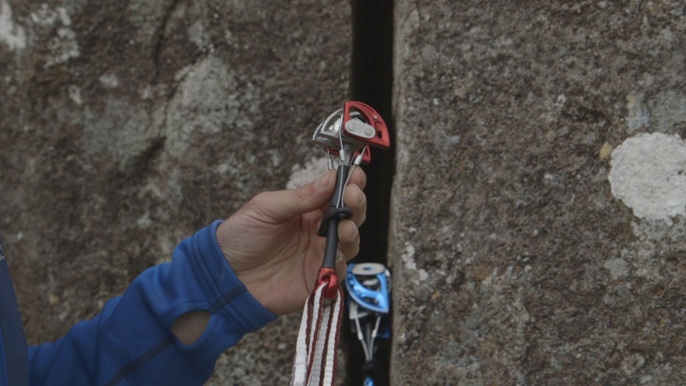

Traditional Climbing
Also called "Trad" climbing, this is one of the most basic types of outdoor climbing where the climbers must bring and place their own removable protection equipment in the rock as they climb to catch them if they fall.

In places with very little outdoor climbing, like Kansas City, the best way to start climbing is to find a local climbing gym and take and introductory climbing class. These classes will teach you basic climbing techniques, ettiquette, and important safety procedures. Climbing gyms also provide a safe environment to become comfortable with climbing before moving to an outdoor crag, where there are several additional safety procedures you will need to know that are taken care of for you in an established climbing gym.
Believe it or not, there is a whole world of climbing with many different ways to experience the sport.
Also called "Trad" climbing, this is one of the most basic types of outdoor climbing where the climbers must bring and place their own removable protection equipment in the rock as they climb to catch them if they fall.
Sport climbing can be done indoor or outdoor, and differs from trad climbing in that the climbers rely on anchors or bolts permanently fixed to the wall to clip into as they climb (a technique also called lead climbing), rather than placing and then later removing the protection used to keep the climber safe in the event of a fall.
Top rope climbing is a climbing style where the rope runs from the belayer up through an anchor at the top of the route, then back down to the climber. This style is great for beginner climbers or veterans attempting routes at the edge of their ability because the climber will fall very short distances before being caught by the rope (vs. lead climbing or trad climbing where a fall can be much further because of the natural slack in the rope between protection devices).

Bouldering is a short, very technical style of climbing where no ropes are used. This risk is mitigated by the fact that most bouldering routes top out at around 20-25 feet, as well as the use of thick movable crash pads and a spotting partner. Bouldering is popular for it's low barrier of entry since all you need is a pair of climbing shoes (and pads if you plan to boulder outside). It is also popular because of it's short, but intense, puzzle-like experience.
Other notable types of climbing include mountaineering (or alpine climbing) and free soloing. Both types of climbing require years of climbing experience to do with relavely low risk. Even still, free soloing is controversial among climbers because of it's high-risk nature since it involves climbing tall routes with no protective equipment at all.